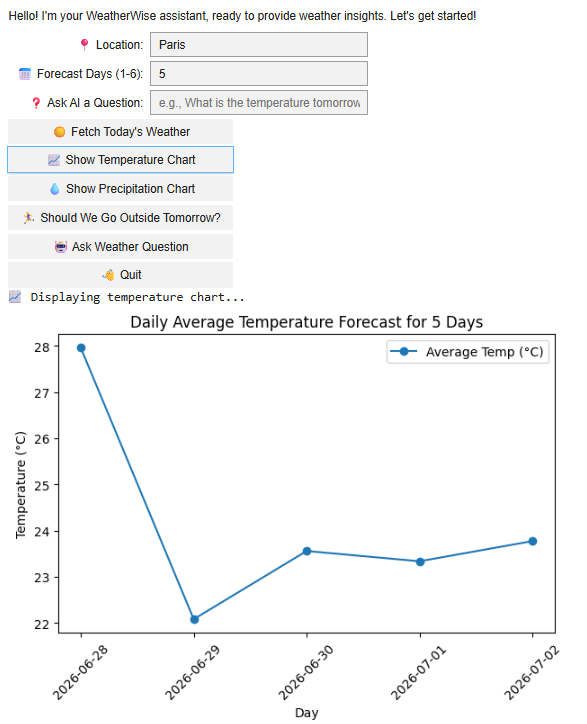

04 / Python
WeatherWise — a weather advisor you can just ask
Live weather data, charts, and rule-based advice wrapped in an interface that answers plain-language questions like "should I go outside tomorrow?"
3-hourly API readings
cached to avoid repeat calls
parsed and answered

Try it
The notebook's forecast logic, running here in your browser on live data. Same advice thresholds, same question parser — no install, no sign-up, no API key.
Five-day outlook
Live data from Open-Meteo. The Python original uses OpenWeatherMap.
The idea
Weather apps answer the question they were designed for, not the one you actually have. You don't want a wall of numbers — you want to know whether tomorrow is worth going outside for. WeatherWise takes live data and turns it into that answer, through charts, rule-based advice, and questions typed in ordinary English.
How it works
A straightforward data → analysis → output pipeline:
- Retrieve — pull current conditions and a 5-day forecast from the OpenWeatherMap API, which returns readings in 3-hour blocks
- Process — aggregate those 3-hourly readings into meaningful daily summaries of temperature, humidity and rainfall
- Visualise — chart temperature and precipitation trends with Matplotlib
- Advise — apply rule-based logic to turn the numbers into an actual recommendation
- Converse — parse natural-language questions and answer them from the same processed data
What I contributed
-
01
The temperature and precipitation visualisations — the charts that make a five-day forecast readable at a glance instead of as a table.
-
02
Data-caching logic that stores API responses and avoids repeated calls. Public weather APIs are rate-limited, so re-fetching the same forecast on every interaction will eventually break the app.
-
03
Fixed the "tomorrow" forecast indexing. The API returns 3-hour blocks, not days, so naive indexing silently returns the wrong day's weather — the kind of bug that produces confident, plausible, wrong answers. Mapping blocks to full days fixed it.
-
04
The interactive ipywidgets interface, turning a notebook of function calls into something a non-technical person can use.
Why it's here
This one is less about statistics and more about the surrounding craft: consuming an external API, reshaping awkwardly-formatted data into the grain you need, caching sensibly, and building an interface for someone who isn't you. Those problems show up in analytics work constantly.